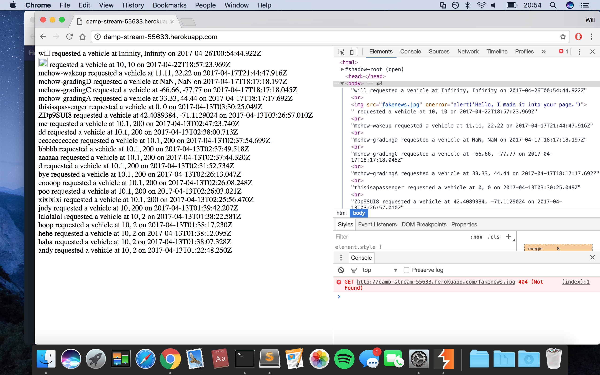

I was brought on board to dig into the application, an implementation of a ride-hailing web-application, it's database and server, looking for potential security vulnerabilities.
An initial overview was performed through black-box testing of the application. The Burp suite was extremely helpful for this, allowing me to easily tweak and resend HTTP requests, probing the vulnerable points of the application's interface. Second, after examining the source code for the application and server, I was able to perform a more informed second round of testing, now that I knew more precisely the weaknesses of the application.
Several vulnerabilities were found within the web application, all of which were ultimately caused by improperly verifying user input or by not verifying it at all.
Although the POST /submit route effectively uses parseFloat to sanitize the lat and lng parameters, the username parameter is more or less directly added to an HTML page after being stored in the mongodb collection. This allows for an easy cross-site scripting attack. Since the HTML index page is loaded before the vulnerable elements in question are added, a simple script tag will not execute. However, one can easily add an HTML tag with an onerror attribute, and by guaranteeing that that tag always raise an error (say by linking to a bogus photo), injected javascript can be executed. This is a rather severe vulnerability as it is easy to insert some script that grabs cookies, session or local data, or scrubs user data in some similar manner. A thorough sanatizing process of the username parameter should effectively eliminate this vulnerability.
In a similar way that usernames sent via the POST /submit route are not sanitized before use, usernames passed in as a search query to the GET /vehicle.json page are used directly, creating a vulnerability whenever the Mongodb collection is queried for that username. Here the only challenge is correctly formatting the malicious query to slip past the URL encoding; some percentages do the trick and it's easy to grab the first element in the vehicles collection using a bogus username. This is a second severe vulnerability, since any user can access data from the vehicles database without any knowledge of usernames or even what the database might contain. Once the user has this knowledge, they can overwrite valid data, or use it for their own purposes. Once again, a thorough sanatizing process is all it would take to remove this vulnerability.
Here, the simplicity of the parseFloat function as a means to sanatize input lets the developper down: while parseFloat does indeed remove malicious scripting (I was unable to sneak anything in as a lat or lng value) certain bogus values can still make their way past parseFloat in a way that harms the web application. Most notably, parseFloat permits Infinity as a number, and by simply giving the POST /submit route a lat or lng value of Infinity, the Black Car Service is weighed down by invalid data and cannot function properly. This is a less severe vulnerability. While it could lead to a more sluggish and ineffective app, it could not be used to steal data or insert malicious script. A second check on the return value of parseFloat could ensure that neither NaN and Infinity get added to the database. 
I reccommend that the developers of this app take some additional time to either import or implement on their own a very thorough sanatizing process, specifically for the usernames being submitted both through the POST /submit route and the GET /vehicle.json route. The costs of implementing these will be minimal since such sanatizing processes have already been developed and can easily be integrated into the app and any cost will be well worth it since the app cannot be considered safe until they are implemented.